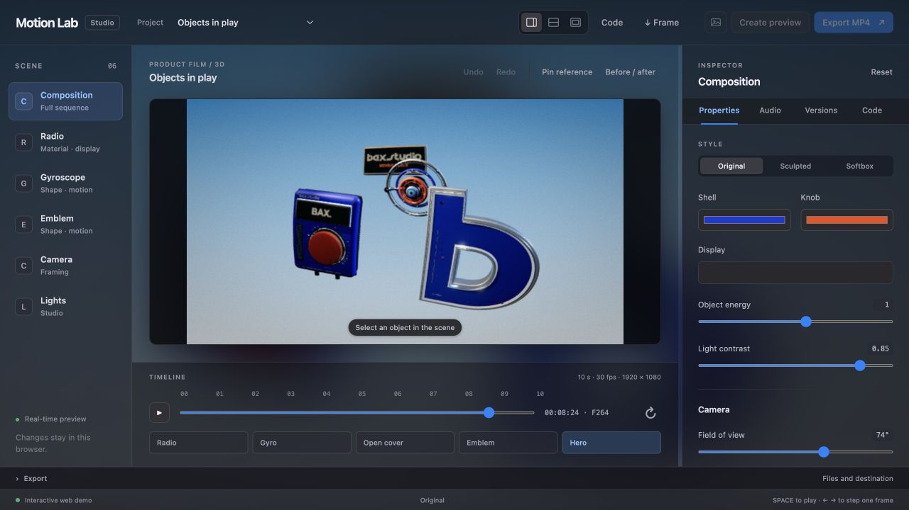

Make it yours.
Materials, position, scale and motion. Controls follow the element you select.
A LOCAL STUDIO FOR MOTION DESIGN
From the first idea to the final frame.
Editable scenes. Precise controls. All on your Mac.

THE STUDIO
A workspace built around the frame. Select an element, refine its properties, and see the result in the same place.
Materials, position, scale and motion. Controls follow the element you select.
Adjust the camera and studio lighting. Compare with a reference and undo a change.
Expand the code panel to inspect the scene source or its live parameter recipe.

MADE IN MOTION LAB
Six films in form, rhythm and movement.
These are rendered films, with editable sources in the repository.
Sound objects, tactile materials and cinematic movement in a rhythmic 3D studio.
YOUR WORKSPACE, LOCALLY
Work with an agent on the scene and its recipe.
Refine in the studio. Render locally.
Tested on macOS · Node.js 22.12+ · Google Chrome
Internet required for the first installation.
git clone https://github.com/AndreXes03/motion-lab.git cd motion-lab npm ci npm run viewer
Your files and renders stay on your Mac.
Checks & supported setup ↗